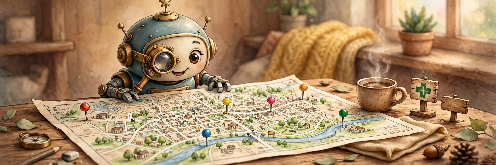
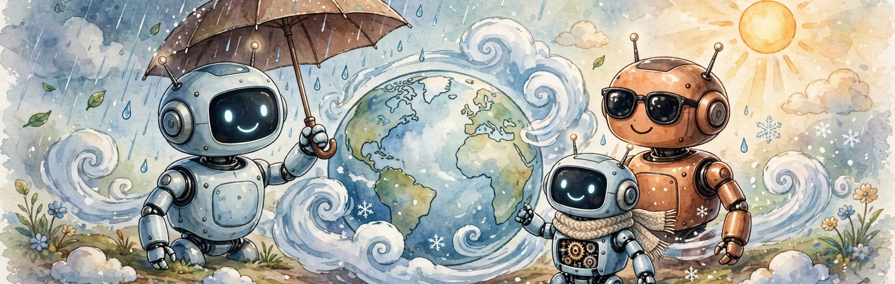

Travel Kit
Four Everyday Cool travel tools in one app: look up at tonight's sky, find what you need wherever you are, check the weather anywhere on Earth, and tune in to radio from everywhere. By Steven Powell.

Tonight's Sky
The sky is a giant clock. Drag it around, run time forward, see what's up tonight, catch satellite passes, and try radio astronomy. Works offline.
Open Tonight's Sky →
Find It
Set a place, tap one big category button — coffee, pharmacy, gas, a laundromat, a library — and get the nearest matches on a live map, each with directions. Needs the internet.
Open Find It →
Weather Everywhere
A portable world-weather workshop: maps, place comparisons, ocean and cloud labs, field missions, and live forecasts for anywhere on the planet. Core workshop works offline.
Open Weather Everywhere →
The Radio Room
A wooden radio that really plays: six SomaFM stations on a make-believe FM dial, a shelf of everywhere radio lives now, and a scanner tuner that finds your county's police, fire, and EMS feeds on Broadcastify. Needs the internet.
Open The Radio Room →